EasyRoads3D includes and additional feature that makes it possible to add additional objects to the road network called Side Objects. These objects can be generated along the full length of the road object or they can be activated for specific marker sections.
There are three side object types:
1) Mesh Type of Side Objects, these side objects are instantiated along the road. Examples are lampposts, rock formations, road decals or tree lines.
2) The procedural Side Object type. This side object is based on a prefab that will be reconstructed and repeated along the road. Examples are guard rails, walls or power lines.
3) The Shape type of side object. This side object type is generated in a similar way as the procedural side object but in this case the side object will be generated according a 2D shape defined in the Shape editor window. This too can be walls and other examples are dust strips, terrain detail mesh overlays or even rivers. This is possible because the side objects system is a framework by itself, it can also be used to create other elements in your scene not road related.
Starting from v3.2 specific side object sections like guard rails in road bends, retaining walls, bridges and tunnels can also be generated automatically based on a set of rules and the terrain profile in that area. Tunnels for example will be created when the height difference from the road to the terrain is higher then a specific value, the Tunnel Threshold Height. Bridges will be created when the height different between the terrain and the road is lower then the specified threshold height. Guard rails and props like sharp turn signs will be created when the road bends at an angle higher then the specified bend threshold angle or when the terrain on the road edges is lower then the specified threshold height. Or retaining walls will be created when the terrain is lower on one side of the road then the specified threshold height or when road sections overlap.
New side objects can be created and existing side objects can be edited in the Side Object Manager. The Side Objects Manager in v3 can be accessed through the Inspector toolbar, the 2nd tab from the right 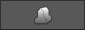
Note: EasyRoads3D also includes an option to snap markers to specific objects. This can be used with your own assets / prefabs that should not necessarily follow the road but that do interact with the road, for example bridge prefabs. More is available at the bottom of this page
Tip: When a road object is selected in the scene and when the currently selected side object in the Side Object Manager is active on this road then a Refresh icon is displayed in the bottom right corner of the Scene View window. This can be used yo quickly visualize changes for this side object on the selected road. The "Update Active Scene Instances" button at the bottom will update this side object on all roads.
The Side Object controls in the Inspector are displayed based on the side object type and which options are active. Below all situations are covered. We will start with the main side object settings.
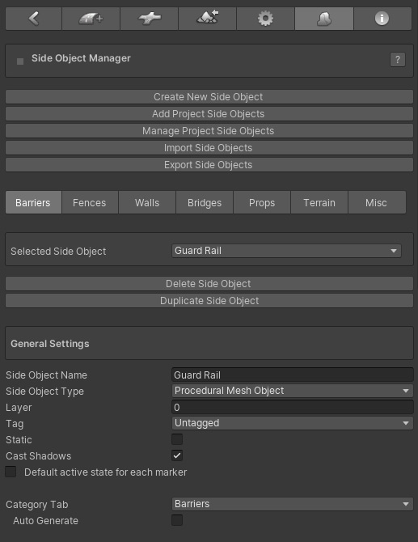
Buttons:
- Create New Side Object: Click this button to add a new side object
- Add Project Side Objects: All new side objects in a scene are stored both in the scene as in the assets folder (/Assets/EasyRoads3D/Resources/ERSideObjectsLog). This button will be active when there are side objects available in the assets folder that are not yet added to this scene. The button will open the side object importer window with a list of all available side objects. This way you can keep the scene specific side objects list clear and concise.
- Import Side Objects: Importing side objects from another project is supported. After importing the side object unity package (see below in Export Side Objects), Click this"Import Side Objects" button. The Side Object Import window will open. Drop the prefab with side object presets (see below in Export Side Objects) in the window. All side objects will be listed, you can chose which side objects to import [website tutorial]
- Manage Project Side Objects: Click this button to remove side objects permanantly from the project
- Export Side Objects: Click this button to export side objects. The side objects that should be exported can be selected. After clicking the Export button you will be asked to set a location and name for the created prefab. This should be inside the assets folder. This prefab including all the dependencies will be exported to a unity package [website tutorial]
Side Objects Toolbar:
Side objects can be categorized in 7 tabs. Some of these tabs also show category specific settings, for example the bridges tab which is both for bridges and tunnels.
Selected Side Object:
The side object for which all controls are displayed.
- Delete Side Object: Click this button remove the side object from the list. It will also remove the side object from all road objects
- Dupicate Side Object: Use this to create a copy of the selected side object. This is useful to create for example left and right of the road variations of a side object
General Settings:
- Side Object Name: The name of the side object
- Side Object Type: The side object type. As mentioned above in the introduction three different side object types are available. The Inspector will update depending on the selected side object type. The options are explained further below
- Layer: You can set the layer to which the generated gameobject should be assigned
- Tag: The tag for this side object
- Static: Check this when the generated gameobject should be marked as static
- Scale: This option is available for procedural and Shape type of side objects
- Cast Shadows: This is displayed for Shape and Procedural side object types. Mesh type of side objects involve instances of the source mesh for which Cast Shadows is already set directly.
- Default active state for each marker: uncheck this for side objects that should only be active on a small selection of markers. It will save time setting up the active/inactive state per marker. This can also be set for this side object on road types and directly on roads
- Category Tab: In which tab this side object will be displayed
- Auto Generate: Side objects can be auto generated based on rules and the terrain profile. Marking the side object as "Auto Generate" will automatically generate the side objects when the side object is active on a road type or individual road. It will still be possible to deactivate this setting in both cases. The rules are side object category specific
Barriers
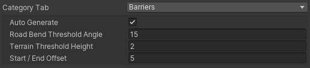
- Auto Generate: By default this side object will be auto generated based on the below set of rules
- Road Bend Threshold Angle: This barrier side object will be generated for road bends latger then the specified angle
- Terrain Threshold Height: This barrier side object will appear when the height differerence between the terrain and the left or right side of the road is larger then the specified height.
- Start / End Offset: The calculated barrier side object start / end position will be adjusted according this value.
Walls
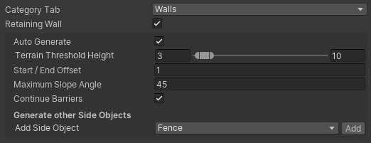
- Retaining Wall: When marked as a retaining the wall the side object will affect terrain deformation/ The indent position will move to the road edge and the terrain nect to the road will not be affected
- Auto Generate: By default this side object will be auto generated based on the below set of rules
- Terrain Threshold Height: This retaining wall side object will appear when the height differerence between the terrain and the left or right side of the road is larger then the specified height.
- Start / End Offset: The calculated barrier side object start / end position will be adjusted according this value.
- Maximum Slope Angle : The Minimum and Maximum allowed slope for this retaining wall to appear. This can for example be useful for stepped walls and avoid these walls from being selected in areas where the road angle is too steep for the stepped wall prefab to accurately follow the road.
- Continue Barriers and Props: Auto generated barriers (like guard rails) and props with rules that match the terrain profile will by default not be generated on retaining wall sections. Toggle on this checkbox when auto generated barriers actually should continue on sections where this retaining will be created
- Generate Other Side Objects: It is possible to link other side objects to this side object. Whenever this side object is auto generated, the linked side object will be created over the same section with additional offset options relative to the start and end. The offset control will appear after selecting a side object from the list
Bridges & Tunnels
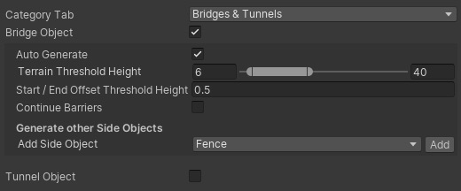
- Bridge Object: Toggle on this checkbox for Bridge type of side objects
- Auto Generate: By default this side object will be auto generated based on the below set of rules
- Terrain Threshold Height: This bridge side object will appear when the height differerence between the terrain and the road is larger then the specified height
- Start / End Offset Threshold Height: Interpolate backwards / forwards and start / end the bridge where the height difference with the terrain is smaller then this value
- Continue Barriers: Auto generated barriers like guard rails with rules that match the terrain profile will by default not be generated on bridge sections. Toggle on this checkbox when auto generated barriers actually should continue on sections where this bridge will be created
- Generate Other Side Objects: It is possible to link other side objects to this side object. Whenever this side object is auto generated, the linked side object will be created over the same section with additional offset options relative to the start and end. The offset control will appear after selecting a side object from the list
- Tunnel Object: When toggled on the below controls will display
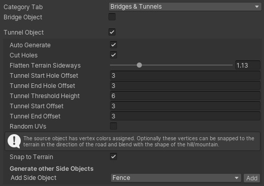
- Bridge Object: The previously covered bridge controls further above will display
- Tunnel Object: Toggle on this checkbox for Tunnel type of side objects, the below controls will display
- Auto Generate: By default this side object will be auto generated based on the below set of rules
- Cut Holes: In Unity 2019.3 and newer versions this will cut holes in the terrain at the start and end of the tunnel. This feature is in Preview status, the results highly depend on the terrains heightmapscale (terrain size vs terrain heightmap resolution) currently the system is optimized for standard heightmapscales like heightmap resolution 513 and terrain size 500x500 or 1000x1000
- Flatten Terrain Sideways: This will adjust the roads Indent values so the terrain will smoothly flatten more outwards at the terrain start and end. A value of 1 represents the position at the outer part of the tunnel
- Tunnel Start Hole Offset: The minimum distance between the start of the tunnel and the point where terrain holes will be created
- Tunnel End Hole Offset: The minimum distance between the end of the tunnel and the point where terrain holes will be created
- Terrain Threshold Height: This tunnel side object will appear when the height differerence between the terrain and the road is larger then the specified height.
- Tunnel Start Offset: This can be used to fine tune the position at the start of the tunnel relative to the position that matches the Terrain Threshold Height value. This value is customizable and can be fine tuned in the Scene View window per tunnel instance by clicking the tunnel object
- Tunnel End Offset: This can be used to fine tune the position at the end of the tunnel relative to the position that matches the Terrain Threshold Height value. This value is customizable and can be fine tuned in the Scene View window per tunnel instance by clicking the tunnel object
- Snap to Terrain : This option will be visible when the source prefab has vertex colors assigned. Vertex positions will be adjusted forwards / backwards in the direction of the road based on the green value and the distance to the terrain. The vertex will fully snap to the terrain when the green value is 1
- Generate Other Side Objects: It is possible to link other side objects to this side object. Whenever this side object is auto generated, the linked side object will be created over the same section with additional offset options relative to the start and end. The offset control will appear after selecting a side object from the list
Note: As seen above for the "Snap to Terrain control", individual vertex positions can be manipulated so the tunnel blends better with the terrain shape. This is usually done for tunnel parts that represent terrain and should blend with the terrain. So the green vertex color is used to move vertices fowards / backwards in the direction of the road. The Blue color is used to snap vertices downwards. This can be used to snap outer vertices downwards. A value of 1 will snap the vertex to the ground It is used on the Rock tunnel example. The red color is also used, it is used to blend outer vertices with the terrain. It is automatically calculated
Note: For tunnels to work well, the start and end sections of the tunnel prefab must be large enough to cover the holes in the terrain. This depends on the terrains heightmapscale (terrain size vs heightmap resolution). The included tunnel examples in the demo package has been tested on terrains with an heightmapscale up to about 4 (2000x2000 terrain , heightmap resolution 513).
When there is still a little bit of terrain visible, like at the start of the tunnel in the demo package. There are two quick ways to fix that. Either paint the hole manually, or use a small brush size, using the "Set Height" terrain tool get the height at the center of the road and paint the visible terrain cell at that height.
Props
Side objects in the Props tab can also be auto generated. Think example of sharp turn direction posts in road bends.
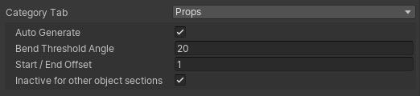
- Auto Generate: By default this side object will be auto generated based on the below set of rules
- Road Bend Threshold Angle: This side object will be generated for road bend angles stronger then the specified angle
- Start / End Offset: Interpolate the calculated start / end positions backwards / forwards and calculate the final start / end position of the side object according this offset value
- Inactive for other side object sections: When toggled on this side object will not be generated on sections already covering retaining wall, bridge or tunnel sections. This can be useful to avoid this side object to be generated in unwanted positions floating in the air or interfering with other side objects
The Inspector wil continue with controls that are side object type specific. All three types are covered below.
- Mesh Object
- Shape Object
- Procedural Mesh Object
Mesh Object:
This side object type can be used to instantiate objects along the track, objects such as lampposts, trees, rock formations, seperate unconnected mesh based fence objects, barriers, etc.
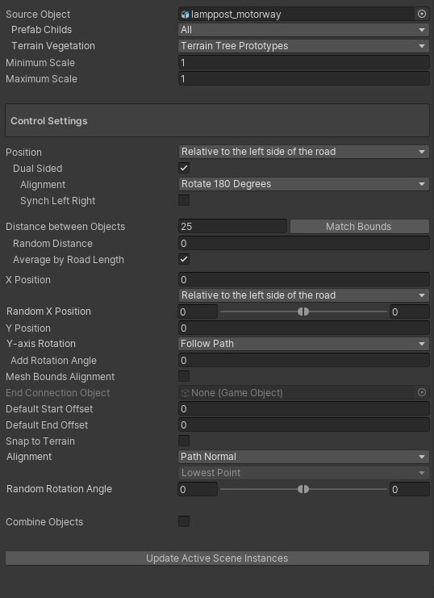
- Source Object: Drag the gameobject / prefab you want to use for this side object in this slotslot
- Prefab Childs: This feature is enabled when more then 1 child object exists in the prefab. So the correct way to use this feature is to setup your prefab in a way that all individual objects are childs of the parent prefab. You have 3 options:
-
All: this will instantiate all child objects per new instance
- Child Sequence: this will go through all child objects according the child index and instantiate a single child object per instance
- Random Mesh:
this will randomly select a child object per instance. If you want specific objects to be instantiated more often, simply duplicate them in the prefab so there is more chance that they will be chosen.
- Terrain Vegetation: The combobox will show all tree prototypes currently added to the terrain object. Selecting one of the prototypes will move the associated prefab to the Source Object slot. When switching to Build Mode, all instantiated trees will be added to the terrain vegetation data with all the the advantages of for example tree billboarding, etc.
- Minimum Scale: The minimum scale for each instance. A value of 1 represents the original scale of the source prefab
- Maximum Scale: The maximum scale for each instance. A value of 1 represents the original scale of the source prefab
Control Settings:
- Position: This will move the object sideways relative to the selected to the selected option from the dropdown. Options are:
1. Relative to center of the road
2.
Relative to the left side of the road
3. Relative to the right side of the road
When the position is relative to the left or right side of the road the side object can be marked as "Dual Sided". This means the object can be used for both sides of the road. For the other side of the road the object Alignment can either be displayed rotated "Rotate 180 Degrees" or mirrored, "Mirror" in the dropdown. When Synch Left Right is active, tthe left and the right side will align, also in road bends. This is useful for example for lamp posts
- Distance between objects: The distance between instantiated objects
- Random Distance: This will add a random distance between 0 and the entered value
- Average by Road Length: By default this is switched on. "Distance between Objects" will be recalculated so the last instance is positioned at the end of the track. When switching "Average by Road Length" off the exact "Distance between Objects" value will be used.
- X Position: This will move the object sideways relative to the default position
- Random X Position: This will add an additional random offset to the X Position value.
- Y Position: This will move the object upwards
- Y-axis Rotation: This controls the rotation on the y-axis. Options are "Follow Road", "Fixed" and "Random".
- Add Rotation Angle: This will add the entered value to the caluclated rotation value and can be used to fine tune the rotation of side objects that are for example used in bends.
- Mesh Bounds Alignment: By default objects are rotated based on the forward direction at that point. This works well for side objects with a small bounding box sizes on the X and Z axis, lampposts etc. but less accurate for objects with a bigger bounding box on the X and Z axis, for example individual fence objects. Switching on this option will align the instantiated object exactly according the size of the object.
- End Connection Object: This is active when Mesh Bounda Alignment is active. This can for example be a post added at the end of a fence formed by fence prefabs.
- Default Start Offset: The start offset can be set for each section directly on the road after selecting the first marker. Here it is possible to set a default start offset.
- Default End Offset: The end offset can be set for each section directly on the road after selecting the second last marker. Here it is possible to set a default end offset.
- Snap to Terrain: By default the Y position of side objects are aligned with the road at that position. This will work fine for side objects near the road and will also build these side objects correctly when active on bridge segments. For side objects like fences etc., especially when using the above Sideways Distance option per marker to move the object towards and away from the road, you usually want to snap the side object to the terrain. That is what this option does. For non road related objects, the status of "Snap to Terrain" in the settings of that object has priority.
- Alignment: you can align side objects with the terrain, options are:
-
None
- Terrain Normal
-
Path Forward
-
Path Normal
Note: When using the Sideways Distance option (per marker), a new spline shape will be created. This means that the connection with the road shape is lost, therefore the Path Forward and Path Normal options will no longer work accurately. The Terrain Normal option however is almost identical and will only have different results outside areas where the terrain is not flattened according the road shape.
When "None" is selected and "Mesh Bounds Alignment" (see above) is toggled on, the second dropdown will control the alignment according the terrain height covered by this instance which is useful to align for example paryicular types fences and walls with the terrain.
- Lowest Point: The instance Y position will match the lowest terrain point
- Highest Point: The instance Y position will match the highest terrain point
-
Average height: The instance Y position will match the average height
- Random Rotatian Angle: This will rotate the object on the x-axis
- Combine Objects: Depending on the used materials, this will combine all instantiated objects into a single object
- Update Active Scene Instances: This button is located at the bottom in the Inspector and will be enabled after changes. Click this button to auto update all scene instances of the selected side object
Bridge Object:
--------------------------------------------------------------------------------------
[Obsolete:] Instead of using static bridge meshes as side objects, in v3.2 it is recommended to add MarkerSnap controllers to these static prefabs. Road markers can be attached quickly to these MarkerSnap controllers so the road perfectly aligns with the bridge. [Add link to new MarkerSnap controller in the Connections section]
--------------------------------------------------------------------------------------
This is useful for bridges that should not adapt to the road shape, like standard motorway bridges. This type of side object is based on a fixed bridge model. When the Mesh Object type is selected and Bridge Object is toggled on, mesh bridge specific controls are displayed:

- Source Object: Drag the bridge gameobject / prefab you want to use for this side object in the corresponding slot
- Prefab Childs: This is opional. It can be used to randomly select a bridge prefab. Note that the base structure should be similar (height and length) for accurate results.
Control Settings:
- X Position: You can use this to fine tune the final position.
- Y Position: You can use this to fine tune the final position.
- Bridge Height: The height difference between the markers of the top road and the markers of the bottom road.
- Marker Spline Control: The controller type of the marker for which this side object will be switched on. generally you want to use Straight XYZ for this. When activating the bridge side object for a marker the corresponding controller type will be updated automatically.
- Deformation Level Distance: The distance over which the terrain should be flattened from the road height to the original terrain height. This will automatically update the corresponding Start Level Distance and End Level Distance of the selected marker.
- Marker Indent Distance: This will automatically update the Indent values of the selected marker and the next marker according this value. This is a quick way to add variation to the terrain deformation near the bridge.
- Marker Surrounding Distance: This will automatically update the Surrounding values of the selected marker and the next marker according this value. This is a quick way to add variation to the terrain deformation near the bridge.
The buttons on the right of each control will be active when a road marker is selected with this side object active. Additional you can select the next marker and the corresponding markers of the road that passes underneath the bridge. When all these buttons are selected all buttons will be active and the values will be auto calculated from the current marker setup in the scene.
So to set this up it is recommended to create two roads crossing each other on a flat terrain. Activate the side object for the top road, position the next marker exactly at the "Bridge End" position, select both markers and raise them to the correct height relative to the bottom road. Select the bottom two markers as well, all buttons in the Side Object Manager are active, ou can now click the buttons to set the values.
To activate the Get Length button you can also temporarily add child objects to the source prefab at the exact marker positions, name these child objects "marker1" and "marker2". The Get Length button will be active. This is a more precise way to set the Bridge Length value. Afterwards you can remove these temprary child objects from the prefab.
When activating this bridge in the scene and selecting the same 4 markers you will see all the required alignment buttons in the Inspector (just below the toolbar) to quickly and accurately align the roads instantly so the bridge perfectly fits.
Shape Object:
This side object will procedurally create shapes along the track based on the 2D shape defined in the 2D Shape Editor window. This can be used to create for example retaining walls or river side objects including both the shape of river beds set to deform the terrain accordingly and the river surface mesh itself.
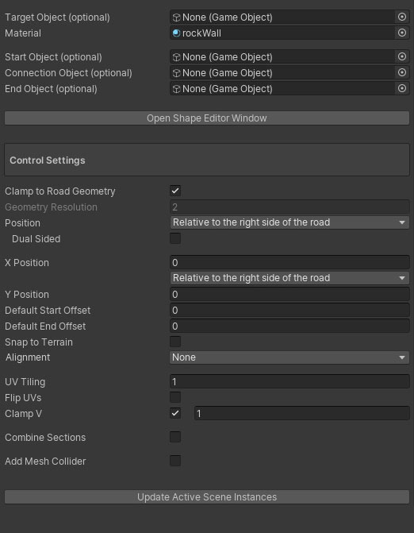
- Target Object: Optionally a target prefab can be selected. This prefab will be instantiated and the procedurally created shape will be added to the mesh asset of this prefab. This is useful if you want to create a shape with additional scripts attached. You can for example drag one of the Unity water prefabs to this slot and define a simple horizontal shape simulating the water surface. The final object will have all the water scripts and materials automatically attached
- Material: The material that should be used for this side object. This is not required when a Target Object is assigned above with already materials set up.
- Start Object: This can be used to attach a start game object to the shape. In v3 it is recommended to use the Procedural Mesh Object for side objects also including Start / End objects
- Connection Object: This object will be instantiate at each new section.
- End Object: This can be used to attach an end game object to the shape. In v3 it is recommended to use the Procedural Mesh Object for side objects also including Start / End objects
- Open Shape Editor Window: This will open the editor window which you can use to define the shape of the side object. See below or Click here for more info.
Control Settings:
- Clamp to Road Geometry: Each section will be build matching the road geometry resolution. This is useful when the side object should exactly follow the road the shape, also in bends. For example kerbs on race tracks
- Geometry Resolution: The distance between vertex rows, this controls the resolution of the geometry.
- Position: This will move the object sideways relative to the selected to the selected option from the dropdown. Options are:
1. Relative to center of the road
2.
Relative to the left side of the road
3. Relative to the right side of the road
When the position is relative to the left or right side of the road the side object can be marked as "Dual Sided". This means the object can be used for both sides of the road. For the other side of the road the object can either be displayed rotated "Rotate 180 Degrees" or mirrored, "Mirror" in the dropdown
- X Position: This will move the object sideways relative to the above selected default position
- Y Position: This will move the object upwards
- Default Start Offset: The start offset can be set for each section directly on the road after selecting the first marker. Here it is possible to set a default start offset.
- Default End Offset: The end offset can be set for each section directly on the road after selecting the second last marker. Here it is possible to set a default end offset.
- Snap to Terrain: By default the Y position of side objects are aligned with the road at that position. This will work fine for side objects near the road and will also build these side objects correctly when active on bridge segments. For side objects like fences etc., especially when using the marker specific X Position option to move the object towards and away from the road, you usually want to snap the side object to the terrain. That is what this option does. For non road related objects, Snap to Terrain can be set in the object settings.
- Alignment: (inactive) you can align side objects with the terrain, options are:
-
None
- Terrain Normal
-
Path Forward
-
Path Normal
Note: When using the Sideways Distance option (per marker), a new spline shape will be created. This means that the connectio with the road shape is lost, therefore the Path Forward and Path Normal options will no longer work accurately. The Terrain Normal option however is almost identical and will only have different results outside areas where the terrain is not flattened according the road shape.
- UV Tiling: The UV Distribution along the shape
- Flip UVs: Flip the UVs sideways
- Clamp V: The UVs will be distributen along the track so they end at a rounded value. Optionally the target value can be defined in decimals in the 0..1 range.
- Combine Section: Depending on the used materials, this will combine all instantiated objects into a single object
- Add Mesh Collider: Activate this option to automatically add a mesh collider to the generated mesh
- Update Active Scene Instances: This button is located at the bottom in the Inspector and will be enabled after changes. Click this button to auto update all scene instances of the selected side object
Procedural Mesh Object:
As mentioned in the side objects introduction, this side object type will procedurally create a mesh based on a prefab (Source Object) created outside Unity.
This side object type can be used to create side objects such as fences, walls, guard rails but also complex bridges.
The source object model can be created in a way that it includes a start, middle and end section. Only the middle section will be repeated. The Start, Middle and End segments can be defined in the Mesh Editor Window.

- Source Object: Drag the source mesh game object / prefab to this slot. Additional info is displayed when the Source Object is set up using naming conventions. Side object specific data will be extracted automatically.
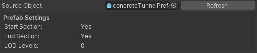
- Start Object: This can be used to attach a start game object to the shape. In v3 it is recommended to use the Procedural Mesh Object for side objects also including Start / End objects
- Connection Object: This object will be instantiate at each new section.
- End Object: This can be used to attach an end game object to the shape. In v3 it is recommended to use the Procedural Mesh Object for side objects also including Start / End objects
- Open Mesh Editor Window: This will open the editor window used to prepare the source mesh for the side objects system. See below or Click here for more info
Control Settings:
- Clamp to Road Geometry: Each section will be build matching the road geometry resolution. For this to work well the Source Object size should be similar to the road resolution
- Position: This will move the object sideways relative to the selected to the selected option from the dropdown. Options are:
1. Relative to center of the road
2.
Relative to the left side of the road
3. Relative to the right side of the road
When the position is relative to the left or right side of the road the side object can be marked as "Dual Sided". This means the object can be used for both sides of the road. For the other side of the road the object can either be displayed rotated "Rotate 180 Degrees" or mirrored, "Mirror" in the dropdown
- X Position:This will move the object sideways relative to the above selected default position
- Random X Position: This will add an additional random offset to the X Position value.
- Min / Max Distance: The distance over which the random position change will take place.
- Y Position: This will move the object upwards
- Random Y Position: This will add an additional random offset to the Y Position value.
- Min / Max Distance: The distance over which the random position change will take place.
- Default Start Offset: The start offset can be set for each section directly on the road after selecting the first marker. Here it is possible to set a default start offset.
- Default End Offset: The end offset can be set for each section directly on the road after selecting the second last marker. Here it is possible to set a default end offset.
- Snap to Terrain: By default the Y position of side objects are aligned with the road at that position. This will work fine for side objects near the road and will also build these side objects correctly when active on bridge segments. For side objects like fences etc., especially when using the above Sideways Distance option per marker to move the object towards and away from the road, you usually want to snap the side object to the terrain. That is what this option does. For non road related objects, Snap to Terrain can be set in the object settings.
- Alignment: side objects can be aligned with the terrain, options are:
-
None
- Terrain Normal
-
Path Forward
-
Path Normal
Note: When using the Sideways Distance option (per marker), a new spline shape will be created. This means that the connectio with the road shape is lost, therefore the Path Forward and Path Normal options will no longer work accurately. The Terrain Normal option however is almost identical and will only have different results outside areas where the terrain is not flattened according the road shape.
- Random Rotatian Angle: This will rotate the object on the x-axis
- Min / Max Distance: The distance over which the random rotation change will take place.
- Combine Section: Depending on the used materials, this will combine all instantiated objects into a single object
- Add Mesh Collider: The MeshCollider componentwill be added.
- Add Box Collider: Box colliders will be added matching the bounds of eaxh segment,
- Collider Scale: This is active for Box Colliders, the scale of the boxes can be set
- Update Active Scene Instances: This button is located at the bottom in the Inspector and will be enabled after changes. Click this button to auto update all scene instances of the selected side object
Tip: Use the H Key to toggle on/off the display of side object handles in Scene View
The shape editor window is used to define shapes in 2D space for Shape type of side objects and will open after clicking the Open Shape Editor Window button in the Inspector which is displayed at the bottom in the General Settings.
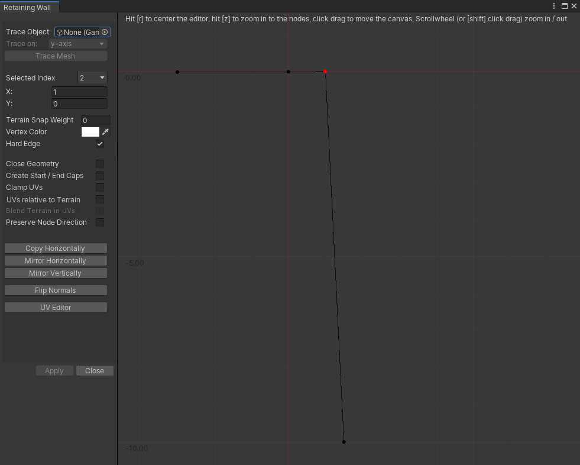
Double click on the stage to add points (or Ctrl + double click to insert points). After adding the second point, points will connect.
- Trace Object: Optionally a model can be used to extract the shape, the focus point for traceable vertices is at z = 0
- Trace on: Depending on how the model was imported in Unity it may be necessary to change the orientation
- Selected Index: The index of the selected point. When a node is selected the below options are available
- X / Y: The X and Y values of the selected point. The fields are editable for precise values
- Terrain Snap Weight: This will lerp corresponding vertices between the original position and the terrain height to the terrain. A value of 1 will snap the vertices to the terrain
- Vertex Color: The generated meshes will include vertex color info which can be used in the attached shader. Here you can optionally set the vertex color for each shape point.
- Hard Edge: This will create hard edge at the selected vertex
- Close Geometry: This will connect the last point to the first
- Create Start / End Caps: This will close the mesh at the start and end of the generated mesh. Both the start and end shape will be visible in the UV Editor window that can be opened through the "UV Editor" button further below
- Clamp UVs: Clamp the UVs between 0..1, also when vertices snap to the terrain
- Clamp UV4: Add additional UV coordinates in uv4 and Keep the same UV distribution also when vertices snap to the terrain. This is useful for custom shaders and meshes that clamp to the terrain resulting in irregular shapes
- UVs Relative to Terrain: The main UV set will be created relative to the terrain bounds
- Blend Terrain in UVs: This option is active for terrain surface overlays which can be set in the Side Object Manager. The UVs will be calculated taking into account vertex colors. The alpha channel
- Preserve Node Direction: This is active when vertices have a Terrain Snap Weight value. The new vertex position will be calculated in the original direction instead of straight downwards
Buttons:
- Mirror Horizontally: This will mirror the points on the Y axis
- Mirrow vertically: This will mirror the points on the X axis
- Flip Faces: Click this button if it turns out the normals point in the opposite direction
- UV Editor: This will open the UV Editor window for fine tuning or customizing the UVs. A material must be assigned first to this side objects, otherwise this option will be disabled
- Apply: This will save changes and update all exisiting scene instances
The stage can be dragged b ypressing the left button and moving the mouse. Zoom in and out using the scrollwheel or Shift+click+drag, hold Shift to select and move multiple roads
Shortcuts:
R Key: This will center the stage
Z Key: This will zoom the stage so the the bounding box of the entered points is completely visible
Scrollwheel: Zoom in / out
Ctrl + Double Click: Insert a node
Del key: Delete the selected node
Shift + Select Node: multiple node selection
UVs for Shape type of side objects are automarically calculated based on the distance between nodes and the UV settings in the Shape Editor window covered above. The main texture of the side object material will be displayed as a reference.
The node positions are represented with black vertical lines. The black dots at the bottom can be selected, it will turn green, and dragged horizontal to fine tune the UVs.
When the shape side object is set up to include Start / End caps (above in the Shape Editor Editor window), these shapes will be visualized as well including controls to position, scale, rotate the shape so the UVs match the texture.
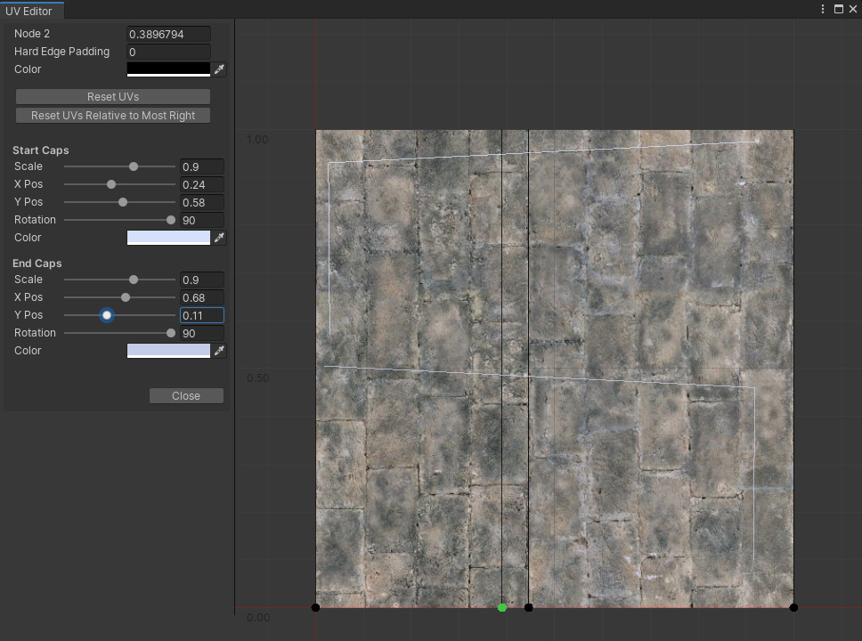
- No Node Selected: When a node is selected the U position can be entered manually
- Hard Edge Padding: Optionally padding can be added at hard edges. The value is relative to 0..1
- Reset UVs: This will recalculate the UVs by distance
- Reset UVs Relative to Most Right: This will do the same as above but relative to the most right node. That way it is possible to keep room available on the right of the texture especially for the start / end caps
When Start / End Caps are created the below controls will be visible, one set for the start cap and one set for the end cap.
- Scale: The shape of the cap will be visualized. The scale option can be used to scale the shape up or down
- X Pos: This slider moves the shape horizontally
- Y Pos: This moves the shape vertically
- Rotation: This rotates the shape
- Color: The color of the shape outline
The mesh editor window is used to prepare the geometry structure for Procedural Mesh Object type of side objects and will open after clicking the Open Mesh Editor Window button in the Inspector.
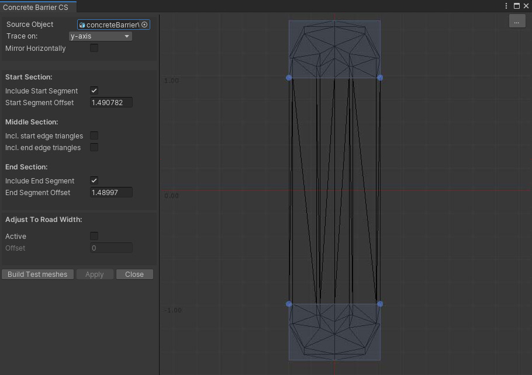
The full mesh structure can be used for each segment or you can split the mesh in start and / or end segments and middle segments.
- Source Object: The mesh that will be used as the base for this side object
- Trace on: Depending on how the model is imported by Unity you may have to rotate the object.
Tip: The best way at the moment to handle this is by dragging the game object in the scene and look in the Inspector. Did Unity auto apply rotation values? In this case it is recommended to create a new prefab, add the model as a child to this prefab and apply the same rotation values to this child object in the prefab. Assign the new prefab as the source object. Check the demo project, the used assets are .obj files. Unity applies a 180 degree rotation on the Y-axis. That is why prefabs are used with the original mesh as the child, the child has a 180 degree rotation on the Y-axis.
- Mirror Horizontally: You can use this to, for example, quickly create left / right versions of side objects like guard railings. Simply duplicate the side object in the Inspector, open the editor window, check "Mirror Horizontally" and click the Apply button.
- Include Start Segment: Activate this checkbox to add a start segment.
- Start Segment Offset: This defines where the geometry should be split between the start and middle segment. The best way to do this is on the stage. Drag one of the blue bottom handles to the edge between the start and middle segment. The handles will snap to vertices within the snapping range.
- Smooth Normals: Activate this to generate smooth normals between segments.
- Incl. Start Edge Triangles: Sometimes you want the triangles exactly on the start edge to be part of the middle segment. Activating this checkbox will do that
- Incl. End Edge Triangles: Sometimes you want the triangles exactly on the end edge to be part of the middle segment. Activating this checkbox will do that
- Include End Segment: Activate this checkbox to add an end segment
- End Segment Offset: This defines where the geometry should be split between the middle and the end segment. The best way to do this is on the stage Drag one of the blue top handles to the edge between the end and middle segment. The handles will snap to vertices within the snapping range
- Smooth Normals: Activate this to generate smooth normals between segments
- Adjust To Road Width: Side objects such as bridges will adjust to the width of the road after activating the Active checkbox
- Offset: The offset value offset defines the position of the left and right edge of the road on this side object. The best way to set the offset is to horizontally drag the blue handle that become visible on the stage after activating this option
- Build Test Meshes: This will generate test objects of the start / middle / end segments in the scene. It is useful to check whether the segments are generated correctly. The segments are located in a new temporary game object "tmp folder" as a child of the main road network game object. These objects will be deleted automatically after clicking the Apply or Close button
- Apply: this will save the changes and auto update all existing instances in the scene
- Close: This will close the editor window
Procdural Mesh Editor: Start Segment Offset. For the best results, this requires vertices on the edges to be at the same Z position. If you do not get the expected results, you can verify this by doing the snapping from the other side, does it indeed result in different geometry? In that case it is recommended to double check the vertex positions in your modelling app.
For Start Sections it is recommended (depending on the geometry complexity) to drag the handles to above the snapping point, then move downwards until it snaps to the desired edge.
For End Sections it is recommended (depending on the geometry complexity) to drag the handles to below the snapping point, then move upwards until it snaps to the desired edge.
Tip: Start with simple objects to get familiar with the system and try all the different settings. Also, for the Procedural Mesh Objects start with simple meshes to get familiar with the Procedural Mesh Object system and check the set up of the meshes in the demo project have a look at the how start / end offsets are defined in the Mesh Editor Window.
Procedural Side Object Naming Convention
Starting from v3.2 Procedural side objects can also be set up using naming conventions. When a Source Object uses naming conventions there will be summary of the details.
This is currently possible for Start, End and Middle sections. Ending the name of each object that represents these three sections respectively with _start, _middle or _end will automatcially split the object and generate the side object accordingly starting with the _start object followed by repeated _middle object sections and ending with the _end object.
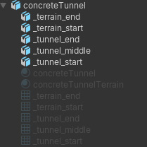
The above example is the Source prefab of the "Concrete Tunnel" example in the demo package. It includes a start, middle and end section for the tunnel section. And it includes a start and end section for the terrain detail section. The Source Object will automatically extract all 3 sections for both sections.
Apart from being able to already set up the sections in your modelling app another advantage of this approach is that start and end sections can overlap the middle section. This give additional control over more complex meshes.
By default procedural side objects do cast shadows. This can be switched off in the General Settings, this will also be swicthed off for source prefabs with the _castShadowsOff in the name.
Also supported are the _stepDown and _stepUp naming conventions. The system will detect height differences between the main child objects and these stepped versions. This height difference will be displayed in the summary. When using a stepped setup side object sections will be generated at a fixed height. Once the difference between the spline height and the current section height surpasses this step height difference, the respective stepped child will be inserted and a new side object section will start at this new height. An example of this in the demo package is the "Stepped Wall" side object.
The _terrain naming convention can be used for tunnel sections that should snap to the terrain in forward direction. This is used for the rock sections on both the Concrete Tunnel and the Rock Tunnel examples in the demo package. The system will assign vertex colors, the green channel is used for this. The more outwards the vertex, the stronger the green value, the stronger the terrain snap weight. For exact precision this information can also be provided directly in the vertex color data of the source prefab.
In v3.2.x it will also be possible to add childs for different LOD levels. LOD groups will be created automatically.
All Side Objects used in a project are stored in the assets folder. All side objects used in a scene are stored in the scene data.
After creating a new scene and adding a Road Network object, the system will check whether side objects are available in the project, in that case you will be asked whether you want to add these side objects to the newly created Road Network Object. If you select No, you will still be able to import all these side objects or a selection of the project side objects. Manually importing a selection of the project side objects will help to keep the side objects list clear and concise.
After making changes to a side object, the associated side object in the project folder will be updated as well. When selecting the Road Network in a scene, the system will check for side object changes and will update the scene side object data. At this moment the scene itself is not updated, you can do this manually. In a next update you will be asked whether you want to update the scene in this case.
There are two ways to add side objects to roads in the scene.
Side objects can be activated for roads in the scene. This is done in the Inspector in the Side Object Section of the selected road.
The second option is to auto activate side objects for road types in General Settings > Road Types. These side objects will be activated automatically for new instances of this road type. It will still be possible to deactivate any of these side objects for a specific road by selecting that road (click one of the blue marker handles) and uncheck the specific side object in the Side Objects Section for the selected road.
After activating a side object for a road the default settings will be used set in the Side Object Manager which we covered above. A selection of controls can be fine tuned. When a side object is activated the foldout arrow will appear which will open and display all options.
After selecting a marker activated side objects can be fine tuned in several ways for that marker section. Select the marker and select the side object you want to change from the dropdown. A number of marker specific options will be available.
Auto Generated Side Objects will be created automatically according the set of rules and the terrain profile. Sometimes you may want to ignore certain auto generated sections or perhaps change the selected side object when multiple similar side objects are active for this road. This can be done by clicking the generated object. This will show Instance specific controls in the top left of the Scene View window.
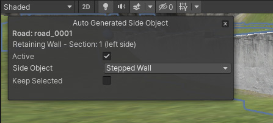
The close icon in the top right can be used to close the window. This can be useful when an auto generated side object was accidentally clicked. Pressing somewhere else in the scene will also close the window but in some situations, for instance when multiple markers are selected, you would want to avoid that. The multiple marker selection will also be lost when clicking in the scene.
The road name will be displayed and the name and status of the side object section
- Active: This can be toggled off. The side object will still visible (transparent) so it can still be selected, but in Build Mode this section will be ignored
- Side Object: Another side object can be selected from the dropdown when multiple side objects exist for this section
- Keep Selected: The system will select the best match based on the terrain profile and the rules set for each side object. It is still possible above to select one of the other available side objects. This "Keep Selected" option can be used to force the currently selected side object to be used after road changes in this area.
Note: Activating this side object per marker is still supported for side objects that are marked as auto generated
Note: Auto generated side objects will inherit possibly adjusted marker X Position values for this side objects type
Note: The Follow Terrain Contours option will interfere with auto generated side objects like bridges and tunnels. Turn of Follow Terrain Contours for the involved markers will generate the bridges and tunnels in these sections.
Marker Snap Objects can be used in the scene as connection points for road markers. Moving the road marker towards these objects will snap the road marker to this object. when within snapping range. It is a quick way to aligned roads with other objects such as bridge objects not generated through the side object system.
By adding these Marker Snap Connectors to strategic positons to the bridge prefab in the project folder new scene instances will be ready and setup after dropping them in the scene.
The Marker Snap Connector prefab is located in /Assets/EasyRoads3D/Prefab Sources/Additional Prefabs/ERMarkerSnapConnector/
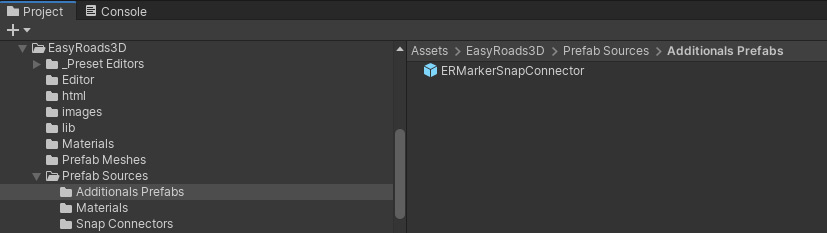
This prefab can be selected and duplicated. The duplicate can then be added to the specific prefab. Multiple marker snap connectors can be added to a single prefab.
A bridge for example can have four marker snap connectors, and example of this is the Motorway_2L_bridge_prefab in the demo scene.
Optionally marker specific controls can be set automatically after being attached to a specific Marker Snap Connector.
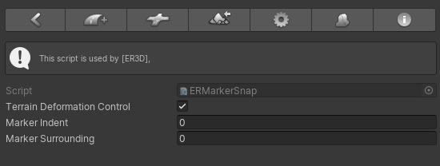
- Terrain Deformation Control: Terrain Deformation will be switched off for the marker snapped to this object. This can be used for roads on bridge prefabs where the terrain should not be adjusted
- Marker Indent: The left and right marker indent values (the distance over which the terrain will be leveled at the same height as the road) the road edge and the edge of the terrain) will auto adjust. This gives more control over terrain deformation if appropriate
- Marker Surrounding:The left and right marker surrounding values (the distance over which the terrain will be leveled gradually from the new height to the original terrain height) will auto adjust. This gives more control over terrain deformation if appropriate
A wide range of side object examples are available in the additional free demo package including tutorials on our website
|